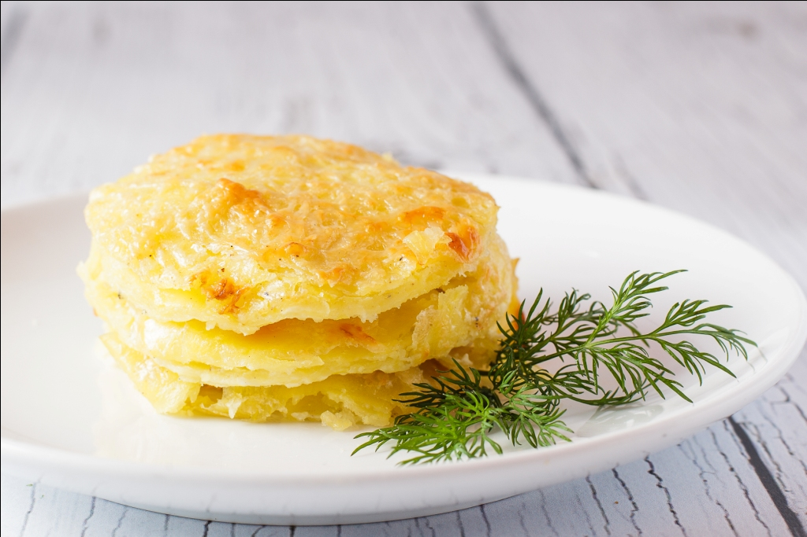
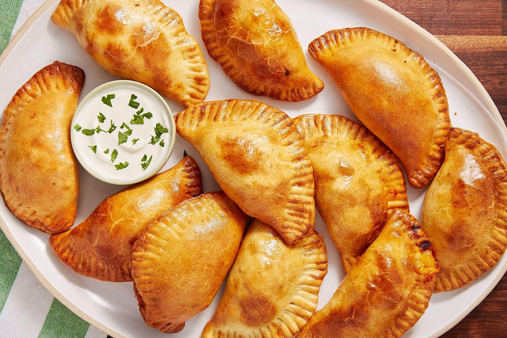

Города, где мы представлены:
- Москва
- Улица Пушкина 4
- Проспект Горохова 12
- Новосибирск
- Переулок Залесский 27Б
- Петропавловск-Камчатский
- Улица Ленина 34Е корпус 5 литера Д
Примеры наших блюд:
Прекрасный французский гратин из курицы.
Испанский Эмпанадас придется по вкусу каждому.
Вид из нашего ресторана:
Данный вид был заснят из нашего ресторана. Приходите, наслаждайтесь!
 Посмотреть
Посмотреть
Меню
Для русской кухни вы можете найти ссылки
| ❋ Меню ресторана "Ромашка" ❋ | |||||
| Кухня | Холодные блюда | Горячие блюда | Десерты | ||
| Салаты | Закуски | Первые блюда | Вторые блюда | ||
 |
Винегрет | Язык с хреном | Щи с квашеной капустой | Вареники с картошкой | Печеные яблоки с медом |
| Оливье | Студень говяжий | Рассольник домашний | Караси запеченые в сметане | Блинчатый пирог | |
| Сельдь под "шубой" | Судак заливной | Мясная солянка | Котлеты "Пожарские" | Пирожное "Картошка" | |
| Севиче из гребешков | Эмпанадас | Хлебный суп с чесноком | Паэлья с морепродуктами | Чуррос | |
| Тимбал из авокадо и тунца | Ахотомате | Астурийская фабада | Свиное раксо | Альмойшавена | |
| Фасоль с ветчиной | Чанфайна | Рыбный суп с манными клецками | Тортилья картофельная | Бунуэлос | |
| Вогезский салат | Рийет из курицы | Баклажанный крем-суп "Ренуар" | Картофель огратен | Бриоши | |
| Салат "Панзанелла" | Делисьез из сыра | Французский тыквенный суп | Гратин из птицы | Лигурийский лимонный пирог | |
| Тар-тар | Маринованный лосось | Суп "Конти" | Тартифлетт | Саварен "Триумф" | |